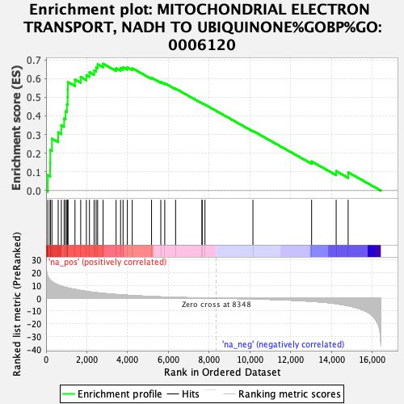
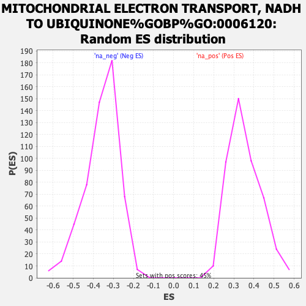

| Dataset | ranked_gene_list |
| Phenotype | NoPhenotypeAvailable |
| Upregulated in class | na_pos |
| GeneSet | MITOCHONDRIAL ELECTRON TRANSPORT, NADH TO UBIQUINONE%GOBP%GO:0006120 |
| Enrichment Score (ES) | 0.67899454 |
| Normalized Enrichment Score (NES) | 1.9282331 |
| Nominal p-value | 0.0 |
| FDR q-value | 0.03155095 |
| FWER p-Value | 0.188 |

| SYMBOL | RANK IN GENE LIST | RANK METRIC SCORE | RUNNING ES | CORE ENRICHMENT | |
|---|---|---|---|---|---|
| 1 | NDUFS8 | 85 | 17.372 | 0.0823 | Yes |
| 2 | MT-ND4 | 201 | 14.208 | 0.1469 | Yes |
| 3 | MT-ND2 | 207 | 14.084 | 0.2175 | Yes |
| 4 | MT-ND1 | 288 | 13.009 | 0.2782 | Yes |
| 5 | NDUFAF1 | 594 | 10.329 | 0.3116 | Yes |
| 6 | NDUFB10 | 748 | 9.481 | 0.3500 | Yes |
| 7 | NDUFV1 | 885 | 8.761 | 0.3859 | Yes |
| 8 | NDUFA3 | 955 | 8.510 | 0.4245 | Yes |
| 9 | NDUFS2 | 1024 | 8.242 | 0.4619 | Yes |
| 10 | MT-ND3 | 1056 | 8.092 | 0.5008 | Yes |
| 11 | NDUFB1 | 1063 | 8.069 | 0.5410 | Yes |
| 12 | NDUFS3 | 1070 | 8.025 | 0.5811 | Yes |
| 13 | NDUFA5 | 1418 | 6.923 | 0.5948 | Yes |
| 14 | NDUFS7 | 1699 | 6.040 | 0.6081 | Yes |
| 15 | NDUFS6 | 1977 | 5.371 | 0.6183 | Yes |
| 16 | NDUFAB1 | 2128 | 4.993 | 0.6343 | Yes |
| 17 | NDUFA1 | 2356 | 4.532 | 0.6432 | Yes |
| 18 | NDUFA10 | 2454 | 4.380 | 0.6594 | Yes |
| 19 | NDUFA2 | 2529 | 4.246 | 0.6762 | Yes |
| 20 | NDUFS5 | 2797 | 3.781 | 0.6790 | Yes |
| 21 | NDUFB3 | 3433 | 2.939 | 0.6550 | No |
| 22 | NDUFB7 | 3652 | 2.664 | 0.6551 | No |
| 23 | NDUFA6 | 3776 | 2.529 | 0.6604 | No |
| 24 | NDUFC1 | 3986 | 2.318 | 0.6593 | No |
| 25 | NDUFB2 | 4226 | 2.078 | 0.6552 | No |
| 26 | NDUFA4 | 5172 | 1.335 | 0.6042 | No |
| 27 | NDUFA8 | 5626 | 1.039 | 0.5818 | No |
| 28 | MT-ND4L | 5819 | 0.936 | 0.5748 | No |
| 29 | NDUFB9 | 6351 | 0.671 | 0.5457 | No |
| 30 | NDUFB6 | 7643 | 0.164 | 0.4677 | No |
| 31 | NDUFB4 | 7655 | 0.162 | 0.4678 | No |
| 32 | MT-ND5 | 7791 | 0.124 | 0.4602 | No |
| 33 | NDUFV3 | 10143 | -0.526 | 0.3193 | No |
| 34 | NDUFS4 | 13020 | -2.442 | 0.1560 | No |
| 35 | NDUFS1 | 14224 | -4.253 | 0.1040 | No |
| 36 | MT-ND6 | 14811 | -5.867 | 0.0978 | No |
